Typing vs. Handwriting in Lectures
A clear analysis of short-term quiz performance
Applied Statistics for Engineers - IESM 324 | 22 November 2026
Question: After watching a recorded lecture, do students score higher when they type notes or write them by hand?
Answer: Typing scored 1.99 points higher on average in this sample. However, the 95% confidence interval runs from a 3.43-point handwriting advantage to a 7.41-point typing advantage. The data do not establish that either method is better, and they do not establish equivalence.
What we analyzed: Public participant data from Urry et al. (2021), a direct replication of an earlier note-taking experiment. There are 142 participants: 68 typing and 74 handwriting. Each participant appears once, watched one of five recorded talks, and completed a quiz after a delay of about 30 minutes without studying their notes.
How to read this report: First describe the sample; then estimate and test the main difference; then examine question type and lecture effects. Supporting examples demonstrate correlation, categorical tests, power and different kinds of intervals. No bootstrap methods are used.
Scope: This is a course reanalysis of the packaged six-variable dataset, not a reproduction of every analysis or meta-analysis in the paper. The main question was chosen in the earlier project work; the data and previous results were already known, so this is not a newly preregistered confirmatory study.
1. Start by describing the sample
Purpose: Understand what was observed before making claims about a wider population. We checked identifiers, missing values, group labels and score ranges. All 142 identifiers are unique; there are no missing cells or out-of-range scores. No observations were removed.
What the numbers show: Typing has the higher overall mean, while handwriting has the higher median. This is possible because the mean responds more to low or high values. The standard deviations are around 15-17 points, much larger than the 1.99-point mean gap.
Reading the chart: Each dot is a student. The box covers the middle half of scores; the line is the median; the diamond is the mean. Overlap describes individual variation and is not itself a hypothesis test.
| Outcome | Group | n | Mean | Median | SD |
| Overall | Typing | 68 | 68.19 | 68.38 | 15.19 |
| Overall | Handwriting | 74 | 66.20 | 70.08 | 17.48 |
| Factual | Typing | 68 | 62.83 | 60.83 | 19.51 |
| Factual | Handwriting | 74 | 62.38 | 67.50 | 23.17 |
| Conceptual | Typing | 68 | 73.55 | 77.00 | 19.24 |
| Conceptual | Handwriting | 74 | 70.02 | 78.57 | 22.53 |
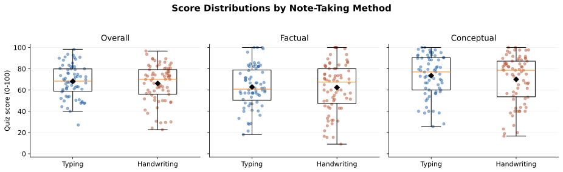
Dots: participants; boxes: middle 50%; line: median; diamond: mean. All observations retained.2. Check shape and assumptions
Purpose: Check whether the methods provide reasonable approximations. Histograms show the distribution of individual scores. A normal probability plot would look approximately straight if the scores followed a normal distribution.
What we see: Scores are bounded between 0 and 100 and show tail departures from normality. A normal distribution is therefore an approximation. With 68 and 74 participants, inference on means is less sensitive to nonnormal individual scores than inference on a single future score or population spread.
Assumptions: Participants are treated as independent; typing and handwriting are separate groups. Welch inference allows unequal variances. Random assignment supports comparisons under the experiment, but the student sample is not a random sample of all learners. Shared sessions or other unrecorded clustering cannot be checked with this file. No diagnostic is used as a mechanical pass/fail rule to choose the main test.
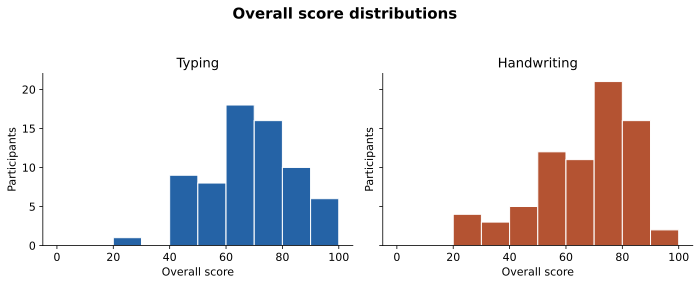
Identical bins and axes; the last bin includes 100.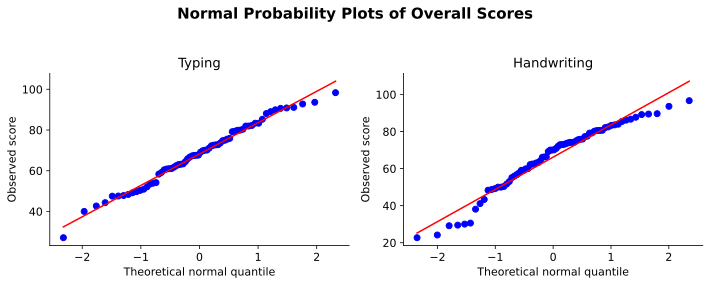
Tail departures and bounded scores matter especially for individual prediction, variance and tolerance intervals.3. Estimate and test the main difference
Purpose: Distinguish the observed sample gap from an uncertain population difference. Define delta as the typing mean minus the handwriting mean. Positive values favor typing.
Hypotheses: H0: delta = 0; H1: delta is not 0. We use a two-sided Welch t-test with a 5% significance level. The estimated difference is +1.99 points, standard error 2.74, t = 0.726, degrees of freedom = 139.58, and p = 0.469.
Decision: Because 0.469 exceeds 0.05, fail to reject H0. If equal population means and the test assumptions held, a t statistic at least this far from zero in either direction would occur about 47% of the time. This is not a 47% probability that H0 is true.
Precision and practical meaning: The 95% interval is [-3.43, +7.41] points. Across repeated comparable studies, this procedure would cover the population difference 95% of the time. The current interval includes zero and advantages for either method. Hedges g = 0.121, a small sample standardized difference; this estimate does not settle which differences matter educationally.
Important distinction: A nonsignificant test does not demonstrate equivalence. No practical equivalence margin was specified, and the interval is too wide to dismiss every educationally relevant difference.
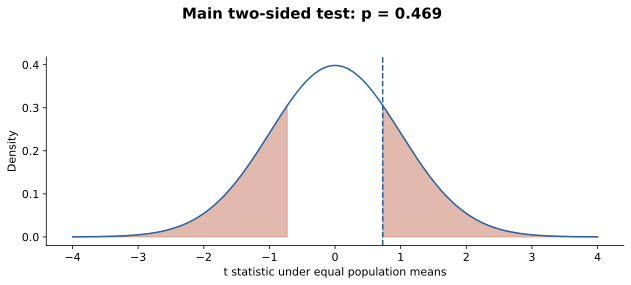
Shading represents both tails at least as far from zero as the observed statistic. The p-value is not the probability that the null is true.4. Factual and conceptual questions
Purpose: Ask whether the typing-handwriting difference changes with question type. The factual difference is +0.45 points; the conceptual difference is +3.53 points. Those two descriptive numbers alone do not prove the margins differ.
Respect the pairing: Each participant answered both kinds of questions. We first compute conceptual minus factual for each person, then compare that gap between the two independent note-taking groups using Welch inference. Treating factual and conceptual scores as unrelated samples would discard this pairing.
Result: Difference in gaps = 3.08 points; 95% CI [-5.82, 11.97]; p = 0.495. The data do not establish a change in the group difference across question types.
Multiple testing: Factual, conceptual and gap comparisons form one exploratory family of three tests. Holm correction controls the family error rate for those three; the main overall test is reported separately. The intervals shown are marginal 95% intervals and are not simultaneous intervals. The wider supporting analyses remain exploratory and cannot be mined for isolated significant claims.
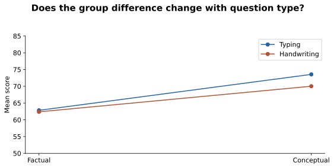
Lines summarize means, not individual change over time. The formal comparison uses conceptual minus factual within each participant.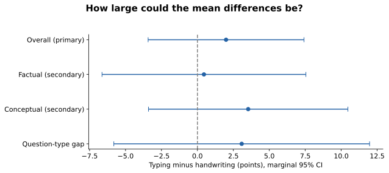
Intervals are individual 95% intervals, not simultaneous family intervals. Secondary p-values are Holm-adjusted separately.5. Account for the lecture
Purpose: Students watched different talks, and some quizzes may be harder. We estimate the group difference after giving each lecture its own baseline score.
Model: Overall score = intercept + typing effect + four lecture indicators + error. The reference lecture is algorithms; typing is coded 1 and handwriting 0. This is multiple linear regression with categorical predictors. With typing alone, the least-squares slope equals the raw +1.99-point mean difference, although the usual regression standard error assumes equal error variance and differs from Welch.
Adjusted result: Typing effect = 1.65 points; 95% CI [-3.43, 6.73]; p = 0.524. R-squared = 18.07%. This approximate adjusted interval uses HC3 standard errors with a normal critical value, as in the earlier Stage 5. Classical regression t intervals are also saved. Accounting for talk changes the estimate little and leaves the conclusion uncertain.
Factorial extension: A condition-by-lecture interaction allows the typing effect to vary across talks. Comparing that model to the additive model gives p = 0.072 (four extra terms). The test does not establish different effects by lecture at 5%, but small cells limit precision; it also does not validate a common effect as a fact.
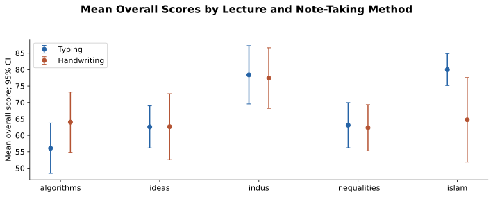
Small subgroups have wide intervals. These are descriptive means with marginal t intervals, not five independent confirmatory tests.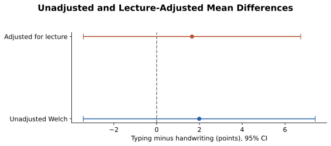
Adjusted result uses an additive model with lecture indicators and a common typing effect; its approximate 95% interval uses HC3 standard errors and a normal critical value.6. Diagnose the model and examine association
Purpose: Check model limitations and study whether factual and conceptual performance move together. Residuals are observed scores minus model predictions. Curvature, unequal spread, unusual tails and influential observations can make standard model intervals less reliable.
Diagnostics: The Breusch-Pagan unequal-variance diagnostic gives p = 0.181. This does not prove constant variance. Cook's distance flags observations that deserve review, not automatic deletion. All rows remain in the analysis. The regression table also provides HC3 standard errors as a sensitivity check for unequal variance.
Correlation: Across participants, factual and conceptual scores have Pearson r = 0.19 with a Fisher-transform 95% CI [0.03, 0.35]. Group-specific Pearson and Spearman results are saved separately. This is association, not causation; lecture difficulty and other factors may contribute. We avoid correlating overall score with its own components.
Distribution-free sensitivity: The tie-corrected two-sided Mann-Whitney test gives p = 0.808. It compares relative ranks/distributions, not the mean difference tested by Welch. A median-shift interpretation requires stronger shape assumptions; it cannot prove the same null as the main test.
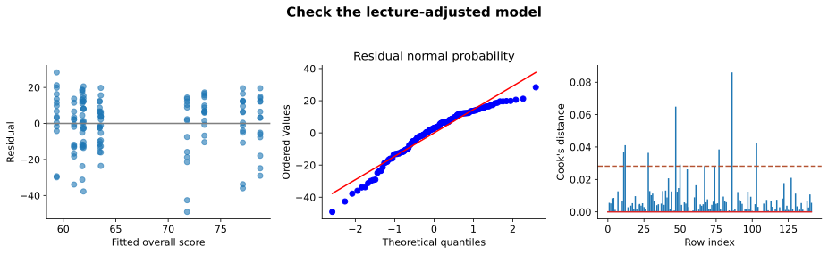
Residual shape, unequal spread and influential observations limit model accuracy. Dashed Cook threshold 4/n is a screening rule, not an exclusion rule.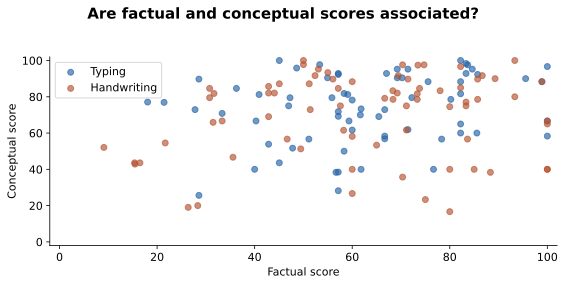
Each point is one participant. Correlation is exploratory and does not demonstrate causation; overall is not correlated with its own components.7. A categorical example and future power
Purpose: Demonstrate a proportion comparison using an explicit, illustrative threshold: an overall score of at least 70. This is not an official pass mark, and the continuous outcome remains the main analysis.
Categorical method: We compare proportions using a pooled two-proportion z-test and the equivalent Pearson 2-by-2 chi-square test without continuity correction. Their two-sided p-values agree: p = 0.502. Wilson 95% intervals describe each group proportion. Expected counts are recorded in the results. The threshold was not selected to maximize significance.
Power answers a future-design question: How often would a study detect an assumed true difference? Using a common SD of 16.42 and a normal planning approximation, a 5-point difference has about 44% power at the current group sizes. Roughly 170 participants per group would give 80% power for that scenario. These are planning estimates, not a retrospective probability that the main conclusion is correct.
Limits: Power changes with the true spread, effect size, allocation and model. These calculations assume independent observations and a common SD; they are not exact Welch sample-size guarantees. We show several assumed effects rather than using the observed effect as proof of low or high power.
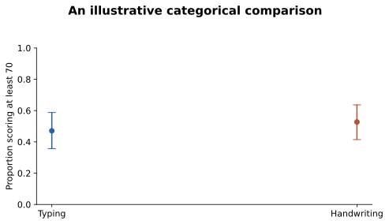
70 is an exploratory threshold, not an official pass mark. Error bars are Wilson 95% confidence intervals.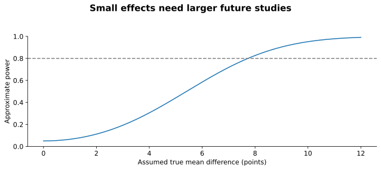
Normal planning approximation at two-sided alpha .05, with common SD estimated from this sample. This is scenario analysis, not evidence for the null.8. Three intervals, three different questions
Confidence interval for a mean: Where might a group's average score be? Its uncertainty uses SD divided by the square root of n. This is much narrower than individual variation.
95% prediction interval: Where might one new participant's score fall under the same normal model? It uses SD multiplied by sqrt(1 + 1/n), plus a t multiplier, and is therefore much wider.
90% content / 95% confidence tolerance interval: Estimate a range intended to contain at least 90% of the group's population score distribution, with 95% confidence under a normal model. This is neither a mean CI nor a 95% prediction interval. The normal tolerance factor is solved numerically by integrating over independent normal sample-mean and chi-square sample-variance distributions.
Assumption warning: Prediction, tolerance and chi-square intervals for SD rely more strongly on normal individual scores. Some upper limits exceed the physical maximum of 100, exposing model mismatch. We preserve them as model-based course illustrations, do not clip them while retaining nominal coverage claims, and do not use them as literal score guarantees. The saved table includes mean, SD, prediction and tolerance intervals.
| Group | Mean 95% CI | SD 95% CI | Prediction 95% | Tolerance 90/95 |
| Typing | 64.52 to 71.87 | 13.00 to 18.28 | 37.65 to 98.73 | 38.79 to 97.60 |
| Handwriting | 62.15 to 70.25 | 15.04 to 20.85 | 31.14 to 101.26 | 32.63 to 99.77 |
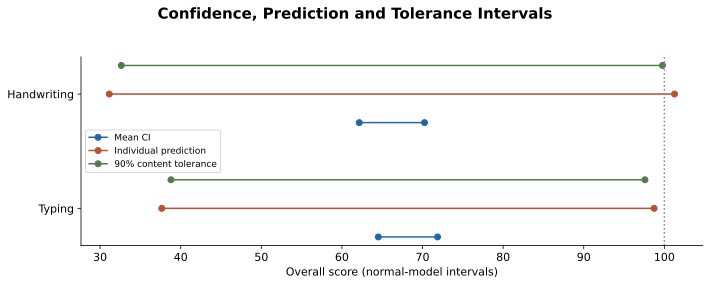
Mean CIs and prediction intervals are 95%; tolerance intervals have 90% population content and 95% confidence under normality. Values beyond 100 expose the normal model limitation; they are not clipped.9. How the calculations work
Descriptive statistics: Sample mean = sum of scores / n. Sample variance = sum of squared distances from the mean / (n - 1). SD is the square root of that variance. Quartiles use linear interpolation; IQR = Q3 - Q1. A 1.5-IQR fence flags unusual scores without deleting them.
Welch calculation: Let u = sT squared / nT and v = sH squared / nH. Standard error = sqrt(u + v). t = (meanT - meanH) / SE. Degrees of freedom = (u + v) squared / [u squared / (nT - 1) + v squared / (nH - 1)]. The 95% CI is the observed difference plus or minus the 97.5th percentile of this t distribution multiplied by SE.
Linear combinations and uncertainty: For a person's gap C - F, variance = Var(C) + Var(F) - 2 Cov(C,F). Computing each gap directly preserves the covariance. For two independent group means, their variances add in the difference; this is why Welch uses u + v.
Regression: Least squares chooses coefficients minimizing squared residuals. Classical coefficient intervals use the residual variance and a t distribution with n minus the number of fitted coefficients degrees of freedom. HC3 replaces that covariance estimate using squared residuals and leverage adjustments. Nested F-tests compare improvement in residual sum of squares per added term.
Verification: The Welch calculations are independently checked against SciPy. The categorical z statistic squared is checked against Pearson chi-square. The main estimate and intervals also match the earlier project stages. The input has a recorded SHA-256 fingerprint. Full precision is preserved in CSV and JSON; the report rounds for readability.
10. Course coverage and interpretation limits
Included from the Fall 2026 syllabus: sampling and descriptive statistics; visualization; distributions and probability plots; point estimation and the CLT; uncertainty of linear combinations; mean, difference, SD, prediction and tolerance intervals; hypothesis tests; distribution-free and categorical tests; multiple testing; power; correlation; simple and multiple regression; and a condition-by-lecture factorial interaction.
Not forced into this question: Counting exercises and discrete distribution models are not separate analyses of the continuous scores. Instrument measurement-error propagation would require measurement-error information that this dataset does not provide. Control charts need a meaningful process order/time structure, which is absent. Bayesian analysis would require an explicit prior and a separate inferential framework; it is not needed here. Bootstrap methods are excluded throughout.
Design limitations: The sample consists of students from one setting. The outcome is immediate learning after a brief delay, not retention days later. The six columns lack study habits, prior knowledge, note length, verbatim overlap, session identifiers and item-level scores. We therefore cannot analyze those mechanisms or fully reproduce the paper's models.
What to say in the presentation: "Typing averaged about two points higher, but our uncertainty interval spans advantages for either method. Adjusting for the lecture does not change that conclusion. This experiment does not establish that typing and handwriting are equally effective, and it does not answer what happens after studying notes or after several days."
What a stronger next study would do: Specify an educationally meaningful effect before collecting data, plan a suitable sample size, record sessions, and measure both immediate and delayed retention. An equivalence question should have a justified margin and an appropriate design.
11. Sources, files and reproducibility
Primary paper: Urry, H. L., et al. (2021). Don't Ditch the Laptop Just Yet: A Direct Replication of Mueller and Oppenheimer's (2014) Study 1 Plus Mini Meta-Analyses Across Similar Studies. Psychological Science, 32(3), 326-339. DOI: 10.1177/0956797620965541.
Dataset: afex::laptop_urry, 142 rows and six columns. Package data documentation; CSV endpoint; authors' OSF archive. The local CSV was carried forward unchanged from the earlier project.
Label discrepancy: The paper's abstract reverses the group counts. The Methods section, packaged data and detailed afex documentation support 68 laptop and 74 longhand. We retain those original condition labels rather than changing them to match the abstract.
Course reference: IESM 324 Applied Statistics for Engineers, Ashot Abrahamyan, Fall 2026, August 2026 syllabus. The syllabus and lecture PDFs are consulted locally and are not redistributed in this project.
Project map: data/ contains the original CSV and dictionary; analysis/ contains reproducible calculations and report generation; results/ contains numerical tables and the audit; visualizations/ contains 13 charts, each in PNG and SVG; reports/ contains this PDF and an HTML version; docs/ contains methods, course mapping and a visualization guide.
Rebuild: Install requirements.txt in a Python environment. Run python analysis/analyze.py, then python analysis/build_report.py. Run python analysis/validate.py for data, numerical and output checks. Saved dependency versions appear in results/analysis.json. The repository README is the entry point.
Provenance: This report and the code were prepared with AI assistance and checked against the data and earlier results. The student group should understand the analysis, review the writing and follow its course disclosure requirements. The supplied paper remains linked rather than redistributed.